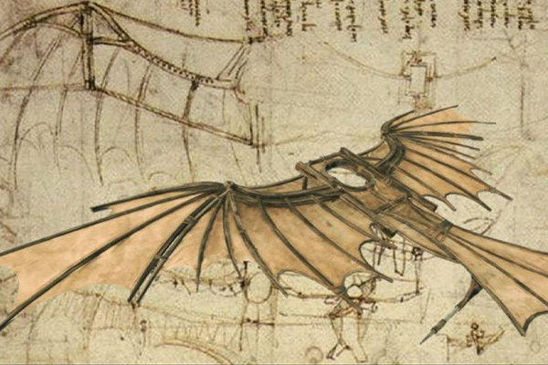
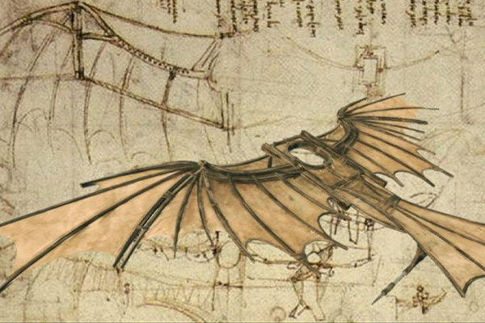

El Ornitóptero
Un ornitóptero (del griego «ornitos», pájaro y «pteron», ala) es un aerodino que obtiene el empuje necesario del movimiento batiente de sus alas de forma análoga a como lo hacen las aves.
El Ornitóptero

El sánscrito épico Ramayana describe un ornitóptero, la Pushpaka Vimana. La antigua leyenda griega de Dédalo e Ícaro y El libro chino de Han ambas describen el uso de plumas para hacer alas de una persona, pero estas no son en realidad aeronaves. Algunos intentos de vuelos tripulados pueden haber sido exitosos al alcanzar el vuelo de aleteo, aunque probablemente sólo el deslizamiento era efectivo. Como lo describen en el siglo noveno poeta Abbas Ibn Firnas, Eilmer monje de Malmesbury del siglo XXI y. Roger Bacon, escrito en 1260, fue también uno de los primeros en considerar a los medios tecnológicos de vuelo. En 1485, Leonardo da Vinci empezó a estudiar el vuelo de los pájaros. Deduciendo que los seres humanos son demasiado pesados, y no lo suficientemente fuertes, para volar con alas simplemente unidas a los brazos. Por lo que diseño un dispositivo en el cual el aviador se acuesta sobre una tabla y trabaja dos grandes alas membranosas, usando palancas, pedales, y un sistema de poleas el Ornitóptero.
Los primeros ornitópteros capaces de vuelo fueron construidos en Francia. En 1858 el modelo de Pierre Jullien voló unos doce metros. El modelo de Gustave trouv 1870 voló una distancia de 70 metros en una manifestación por la Academia Francesa de Ciencias. Las alas se agitaban por las cargas de pólvora Activación de un tubo de Bourdon. Jobert en 1871 utiliza una banda de goma para alimentar un pequeño pájaro modelo. Alphonse Pnaud, Abel Hureau de Villeneuve, y Victor Tatin, también hicieron ornitópteros goma impulsados durante la década de 1870. Ornitóptero de Tatin fue quizás el primero en utilizar la torsión activa de las alas, y al parecer sirvió como la base para un juguete comercial que ofrece Pichancourt c. 1889.
Desde 1884 en adelante, Lawrence Hargrave construyo decenas de ornitópteros impulsados por bandas de goma, resortes, vapor o aire comprimido. Introdujo el uso de pequeños aleteos de las alas que proporcionan el empuje de ala fija más grande. Esto eliminó la necesidad de reducción de engranajes, lo que simplifico la construcción.
 
